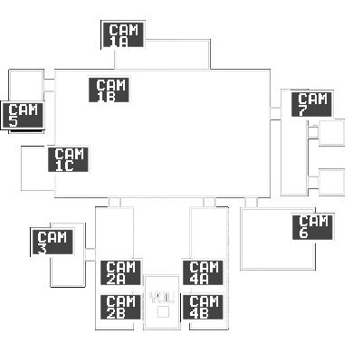

NIGHT SHIFT
SECURITY SYSTEM / 1993
?
ЗВУК ВКЛ
⛶
НЕОФИЦИАЛЬНАЯ ФАН-ИГРА
Five
Nights
at
Freddy’s
Они снова двигаются.
Продержись до шести утра.
Новая игра
Продолжить
Ночь 1
Своя ночь
01—20
Наушники рекомендованы. Прогресс сохраняется.
CAM 01 — MAIN STAGE
● NO SIGNAL
Неофициальная 2D-версия · FNAF © Scott Cawthon
ОСТОРОЖНО: ГРОМКИЕ ЗВУКИ И СКРИМЕРЫ
V.1.0
НОЧЬ 01
12
AM
ОФИС ОХРАНЫ
A / D — двери · Q / E — свет · ПРОБЕЛ — камеры
ДВЕРЬ
СВЕТ
ДВЕРЬ
СВЕТ
ЗАПАС ЭНЕРГИИ
100%
ПОТРЕБЛЕНИЕ
Поднять или опустить монитор камер
Ⅱ
ПАУЗА
REC
00:00:00
LIVE FEED /
CAM 01
Главная сцена

Наблюдение замедляет их. Но не всех.